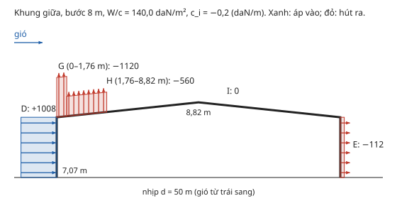

Bài 4.5. Ví dụ Hòa Bình Worked example: Hoa Binh factory
Ví dụ đi trọn chuỗi tính gió cho khung giữa nhà xưởng Hòa Bình: từ $W_0$ đến bảng tải daN/m gán lên cột và kèo, có xét hai trường hợp áp lực trong.
- Lập được bảng tải gió trên khung (Bảng 4.6) cho một hướng gió với $c_i = \pm 0{,}2$.
- Khai báo các load pattern gió và gán tải theo đoạn kèo trong SAP2000.
1. Tình huống
Mô hình mẫu 250317_NhaXuong của nhà xưởng Hòa Bình gán cột đón gió 784 kG/m. Kiểm tra lại cho thấy con số này bằng $1120 \times 0{,}7$, tức chưa có áp lực trong. Khi xét $c_i = -0{,}2$, tải cột đón gió tăng lên 1008 daN/m.
2. Ví dụ tính toán

Số liệu. Nhịp $d = 50$ m, dài $b = 72$ m, cao đỉnh cột 7,07 m, cao đỉnh mái $h = 8{,}82$ m, độ dốc 7 % ($\alpha = 4{,}0°$), bước khung 8 m, vùng gió II ($W_0 = 95$ daN/m²), địa hình B, cấp hậu quả C2.
Lời giải
Bước 1. $W_{3s,10} = 0{,}852 \times 95 = 80{,}94$ daN/m².
Bước 2. $h = 8{,}82 \le b$ nên $z_e = h = 8{,}82$ m. Nội suy Bảng 9 (B): $k = 0{,}969$.
Bước 3. Chạy Modal được $T_1 < 1$ s, nên $G_f = 0{,}85$.
Bước 4. $W_k/c = 80{,}94 \times 0{,}969 \times 0{,}85 = 66{,}7$ daN/m². Giá trị tính toán $W/c = 1{,}0 \times 2{,}1 \times 66{,}7 = 140{,}0$ daN/m². Trên khung giữa (bước 8 m): $q/c = 1120$ daN/m.
Bước 5 – Phân vùng (gió vuông góc trục dọc nhà): $e = \min(72;\ 2 \times 8{,}82) = 17{,}64$ m. Tường đầu hồi: A = 3,53 m; B = 14,11 m; C = 32,36 m. Mái ($\alpha = 4° < 5°$, coi là mái bằng): vùng G, F sâu $e/10 = 1{,}76$ m; vùng H đến $e/2 = 8{,}82$ m; vùng I phần còn lại. $h/d = 0{,}18 \le 0{,}25$.
Bước 6 – Tải trên khung giữa (daN/m):
| Vùng | $c_e$ | $c_i = +0{,}2$: $c_p$ | $q$ | $c_i = -0{,}2$: $c_p$ | $q$ |
|---|---|---|---|---|---|
| D – cột đón gió | +0,7 | +0,5 | 560 | +0,9 | 1008 |
| E – cột khuất gió | −0,3 | −0,5 | −560 | −0,1 | −112 |
| G – kèo, 0–1,76 m | −1,2 | −1,4 | −1569 | −1,0 | −1120 |
| H – kèo, 1,76–8,82 m | −0,7 | −0,9 | −1008 | −0,5 | −560 |
| I – kèo, phần còn lại (âm) | −0,2 | −0,4 | −448 | 0,0 | 0 |
Bảng 4.6. Tải gió tính toán trên khung giữa – công trình Hòa Bình
Dấu dương: áp vào bề mặt. Dấu âm: hút ra khỏi bề mặt (kèo bị nâng lên).
Đối chiếu mô hình mẫu 250317_NhaXuong. Mô hình gán cột đón gió 784 kG/m (bằng $1120 \times 0{,}7$), tức chưa xét áp lực trong. Theo F.12, nhà xưởng tôn kín vẫn phải xét $c_i = \pm 0{,}2$. Trường hợp $c_i = -0{,}2$ làm cột đón gió tăng lên 1008 daN/m (+29 %). Khi lập mô hình mới nên khai báo đủ hai trường hợp áp lực trong cho mỗi hướng gió, giống cách làm với ASCE ở Chương 9.
3. Thực hành SAP2000
Thực hành trên SAP2000
- Define → Load Patterns: SW (Dead, multiplier 1,05), D (Dead, 0), L (Live, 0), và 8 trường hợp gió: WX+i, WX−i, WX'+i, WX'−i (gió ngược chiều), WY+i, WY−i, WY'+i, WY'−i.
- Gán tải tính toán theo Bảng 4.6 lên cột (Global X/Y) và kèo (Local 2, theo đoạn RelDist).
- Khung biên lấy một nửa tải. Khung trong phạm vi $e/4$ từ đầu hồi dùng vùng F thay cho G.
4. Lỗi thường gặp
- Gán tải mái theo phương Global Z thay cho Local 2 của kèo: phần tải vuông góc mặt mái bị lệch.
- Chỉ khai báo một trường hợp áp lực trong cho mỗi hướng gió; phải đủ $+0{,}2$ và $-0{,}2$.
5. Luyện tập
Vì sao trường hợp $c_i = -0{,}2$ làm tải lên cột đón gió lớn hơn?
Gợi ý
Viết $c_p$ cho vùng D với hai dấu của $c_i$.
Lời giải
$c_i = +0{,}2$: $c_p = 0{,}5$; $c_i = -0{,}2$: $c_p = 0{,}9$ → tải cột đón gió 1008 daN/m thay vì 560.
Khung biên (đầu hồi) nhận một nửa tải so với khung giữa. Tính tải gió lên cột đón gió của khung biên khi $c_i = -0{,}2$ (dùng Bảng 4.6).
Gợi ý
Khung biên lấy $B/2$.
Lời giải
$q = 1008/2 = 504$ daN/m.
Giả sử một khung trong nằm trong phạm vi $e/4$ từ đầu hồi nên đoạn kèo 0–1,76 m thuộc vùng F ($c_e = -1{,}8$), bước khung 8 m, $W/c = 140{,}05$ daN/m². Tính độ lớn tải hút trên đoạn đó khi $c_i = +0{,}2$.
Gợi ý
$c_p = c_e - c_i$; $q = |c_p| \cdot W/c \cdot B$.
Lời giải
$c_p = -1{,}8 - 0{,}2 = -2{,}0$; $q = 2{,}0 \times 140{,}05 \times 8 = 2241$ daN/m (lấy $W/c = 140{,}0$ thì được 2240).
- Hòa Bình, khung giữa: $q/c = 1120$ daN/m; cột đón gió 560 / 1008 daN/m với $c_i = +0{,}2$ / $-0{,}2$.
- Kèo vùng G nặng nhất: −1569 daN/m ($c_i = +0{,}2$); trường hợp $c_i = +0{,}2$ bất lợi cho kèo, $c_i = -0{,}2$ bất lợi cho cột đón gió.
- Mỗi hướng gió khai báo hai load pattern ($\pm c_i$); khung biên lấy nửa tải, khung trong phạm vi $e/4$ dùng vùng F.